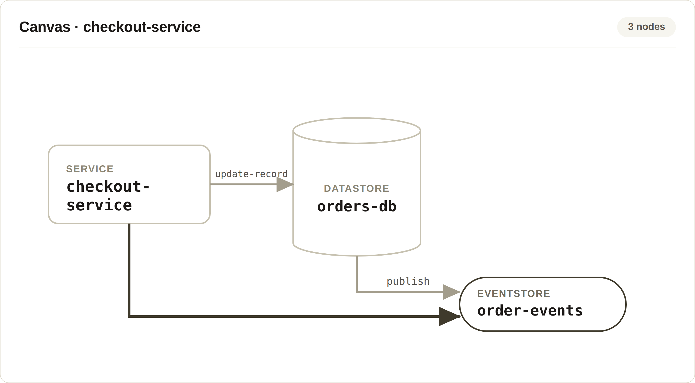
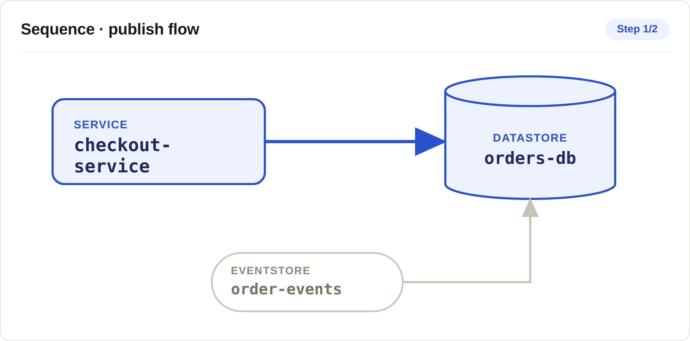
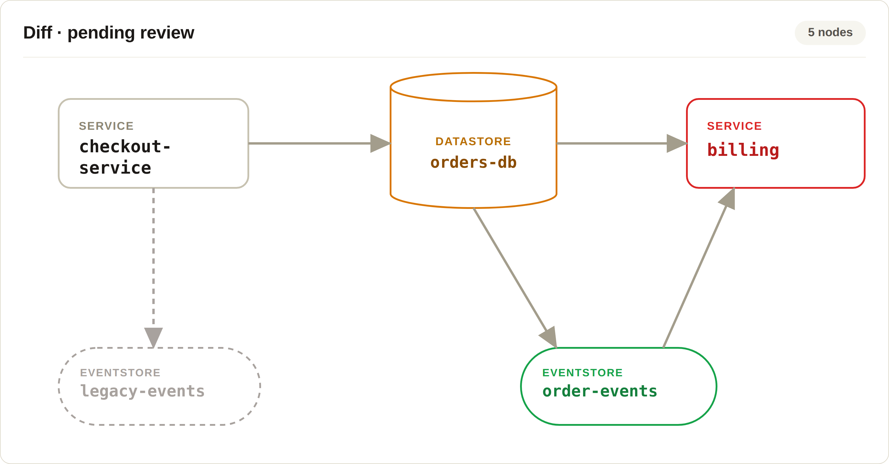

Deuex · Stealth Startup · Jun 2021 – 2022
Architecture Canvas
System Architecture Visualiser
This stealth-mode startup set out to build a visual tool for modelling system architecture and component interactions. As the sole developer on the product, I designed and built the node-and-edge canvas that became the core of the experience, spanning everything from CRUD workflows to playback and change review.
A canvas for services, projects, and rebases
I built the core CRUD for services and projects, the graph editing surface itself, and rebase functionality that lets a team move a project from one service to another while preserving its graph structure and history — instead of rebuilding the diagram from scratch.

Watching a process move through the system
A static diagram can't show you how a request actually flows. I built sequence and flow execution — letting users play back a saved flow with edges highlighting step by step, so a team could visualise exactly how a process moved through the architecture instead of inferring it from a still image.

Reviewing architecture changes before they commit
I designed a client-side visual diff system comparing JSON graph structures — flagging added, updated, deleted, and errored nodes at a glance — so a team could review exactly what an architecture change touched before committing it. Import, export, and commit functionality sat on top, with persistent local state preserving graph history across sessions.

- Added project import/export and commit functionality, with persistent local state to preserve graph history across sessions.
- Worked as the sole developer through the platform's initial build-out, adding its core functionality and keeping it demo-ready, before moving off the project.